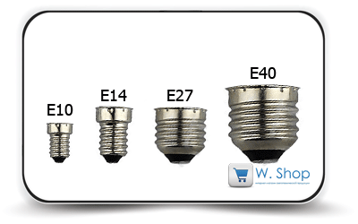
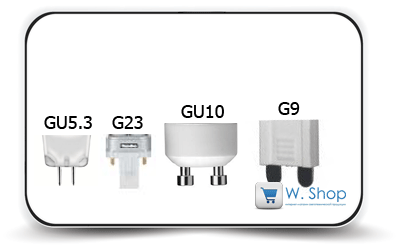
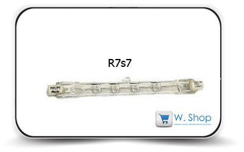
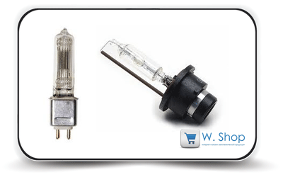

О цоколях энергосберегающих электроламп

Выбирая торшер, светильник или люстру стоит задуматься, лампы с каким типом цоколя подойдут к их патрону. Цоколь – неотъемлемая часть лампы, которая предназначена для обеспечения надёжного крепления лампы в патроне и соединения её с источником питания. В зависимости от того, какова мощность и вид лампы применяют разные типы цоколей. Каждый из них имеет свое условное обозначение, в котором отражены особенности его конструкции, диаметр, количество контактов, уточняется модификация.
Структура условного обозначения цоколя
• Первая буква обозначает тип цоколя.
•
На втором месте размещается число, которое указывает на расстояние в
миллиметрах между контактами или диаметр резьбы соединительной части.
•
Если в конце имеются строчные буквы, они указывают на количество
контактных штырьков, пластин, гибких соединений (в некоторых типах)
(например, буква "s" означает наличие одного контакта).
• Возможно, около первой буквы в обозначении будет находиться ещё одна. Она является уточняющей для обозначения модификации.
Если говорить о лампах, которые применяются в источниках света
бытового использования, то их можно разделить на следующие группы: E, G и
R.
Группа Е. Цоколь Эдисона (резьбовой)

Цоколь, который имеет самую давнюю историю, второе название его
говорит о том, кто именно его изобрел. Классификация данного типа
цоколей напрямую зависит от их диаметра. Наибольшее распространение
получили:
• Е14 (SES, "миньон") и Е27 (ES, средний) наиболее часто применяются в бытовых светильниках, их устанавливают в лампах накаливания, светодиодных, компактных люминесцентных и галогенных лампах;
цифры 14 и 27 обозначает диаметр резьбы в миллиметрах; они очень просты
в эксплуатации: для замены лампы достаточно ввернуть её в патрон.
•
Е40 (GES) работает по тому же принципу, но имеет больший диаметр цоколя,
используют их в мощных лампах, которые используются, например, в
уличных фонарях. Для таких ламп средние показатели расхода электрической
энергии в случае замены лампы накаливания светодиодной с таким же
цоколем сокращаются в 10 раз.
Группа G. Штырьковый цоколь

В данном случае лампа и патрон соединяются с использованием штыревой
системы, а цифры в обозначении обозначают расстояние в миллиметрах между
центрами двух контактов (штырьков), которые подсоединяются к источнику
питания. Если же их более двух, то в маркировке указывается диаметр
окружности, по которой располагаются центры штырьков. Применяются такие
цоколи в люминесцентных и галогенных лампах.
Ранее такие цоколи
использовались в длинных люминесцентных лампах. Обозначение GU означает,
что данная лампа имеет цоколь отдельной модификации. Стоит обратить
внимание на то, что G и GU не являются взаимозаменяемыми. Наибольшее
распространение получили в последнее время цоколи GU5.3, GU10, G23.
Цоколь GU5.3 довольно часто используется в устройстве энергосберегающих и галогеновых ламп. Примером использования этого вида цоколя могут стать светильники, устанавливаемые в витринах ювелирных магазинов, в галереях для подсветки картин, организации акцентного освещения. Кроме того, не обходятся без них и светильники, размещённые в натяжных или подвесных потолках, в подсветке мебели. Выпускается довольно широкий ассортимент светодиодных светильников с таким цоколем.
Особенностью ламп с цоколем GU10 является наличие утолщения на концах
штырьков (контактов). Это необходимо для обеспечения возможности
организации поворотного соединения цоколя и патрона. Таким цоколем
оснащаются потолочные стандартные энергосберегающие светильники, реже он
используется в светодиодных светильниках. Также не лишним будет
обратить внимание на особенности цоколя G23: внутри него размещается
статер.
Группа R с утопленным контактом.

Основные представители данной группы являются цоколи r7s (7 мм –
расстояние между штырьками). Кроме того, вслед за этим обозначением идут
цифры, обозначающие длину лампы в миллиметрах. Чаще всего данный тип
цоколя встречается в галогенных и энергосберегающих лампах.
Нестандартные цоколи

Помимо широко распространённых стандартных цоколей выпускаются ещё и целый ряд нестандартных, которые используются, к примеру, в отдельных проекционных лампах. Также существуют отдельные цоколи для ксеноновых ламп, цоколи, имеющие кабельное соединение.
Если с энергосберегающими лампами и лампами накаливания по подбору
цоколя всё стандартно и понятно, со светодиодными светильниками всё не
так просто. Они требуют внимания к данному вопросу при необходимости
замены. Но если точно знать, с каким цоколем необходима лампа в данном
случае, замену найти в общей линейке ламп не составит труда.
| Если Вы решили купить энергосберегающие лампы в интернет магазине W.Shop, перейдите по ссылке "энергосберегающие лампы" для выбора интересующих Вас ламп. В правом меню Вы сможете отфильтровать продукцию по своим характеристикам. | Вы можете купить энергосберегающие лампы следующих производителей | ||||
 |
 |
 |
 |
||